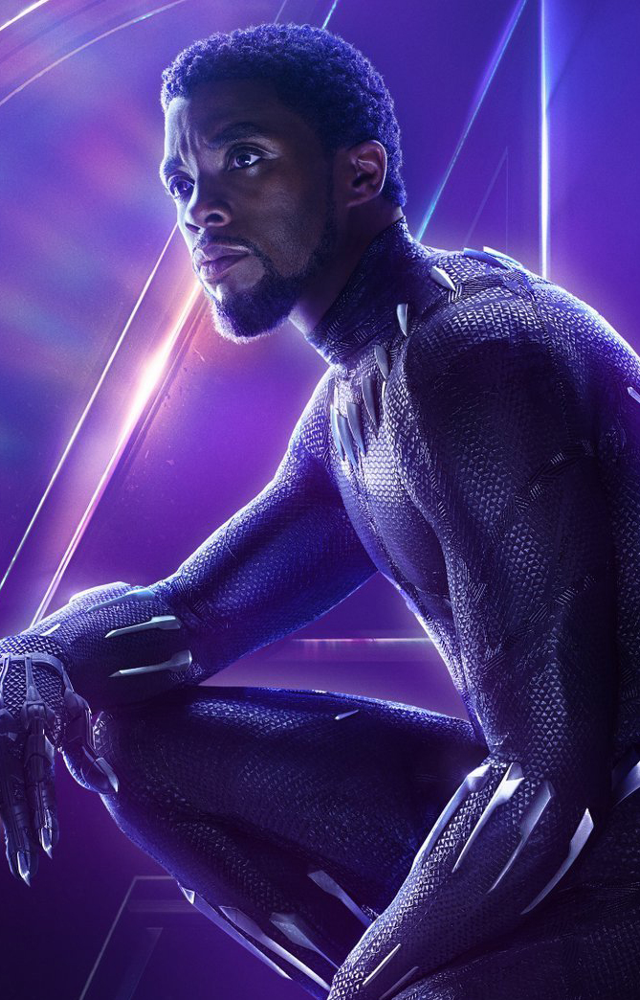

T'Challa est le Roi du Wakanda et le premier fils de T'Chaka et Ramonda. En tant que monarche Wakandais, il devint le détenteur du titre de Black Panther
Black Panther rejoignit une Guerre Civile entre les Avengers, où il s'allia à Iron Man. Et intègre les films Marvel au fur et à mesure. Après avoir participé à cette affrontement, le prince T'Challa retourne chez lui dans la nation africaine reculée et technologiquement avancée du Wakanda, pour servir son pays en tant que nouveau roi. Cependant, le pouvoir de T'Challa va bientôt être défié par des membres de son propre pays.
Le film est sorti en 2018 par le réalisateur Ryan Coogler
Compétences et pouvoirs
Pouvoirs
Capacités augmentées à l'Herbe-Cœur
Force améliorée
Durabilité améliorée
Vitesse, agilité, endurance ou encore réfflexes améliorés
Facteur de guérison
Compétences
Haut niveau intellectuel
Maître tacticien
Maître des Arts Martiaux et acrobate:
Pilote
Equipement
Habit de Panthère
Habit de Panthère : T'Challa possède un costume de combat unique conçu et tissé en vibranium, comme le bouclier de Captain America. Il reçut une version améliorée de l'habit conçu par Shuri, capable d'absorber et manipuler l'énergie à diverses fins.
Griffes en vibranium
Armes
Dague Iklwa en vibranium :T'Challa utilisa une lance légère Wakandaise durant les duels cérémoniels pour la couronne contre M'Baku, et plus tard contre Erik Killmonger.
Bouclier Nguni : T'Challa utilisa un bouclier cérémoniel avec une attache en vibranium durant la duel pour la couronne qui l'opposa à M'Baku, et plus tard à Erik Killmonger.